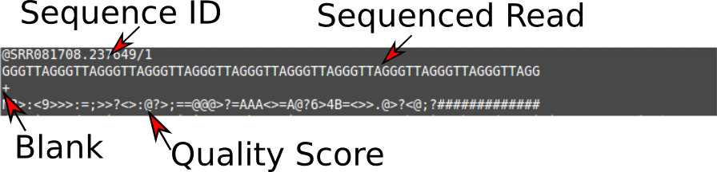
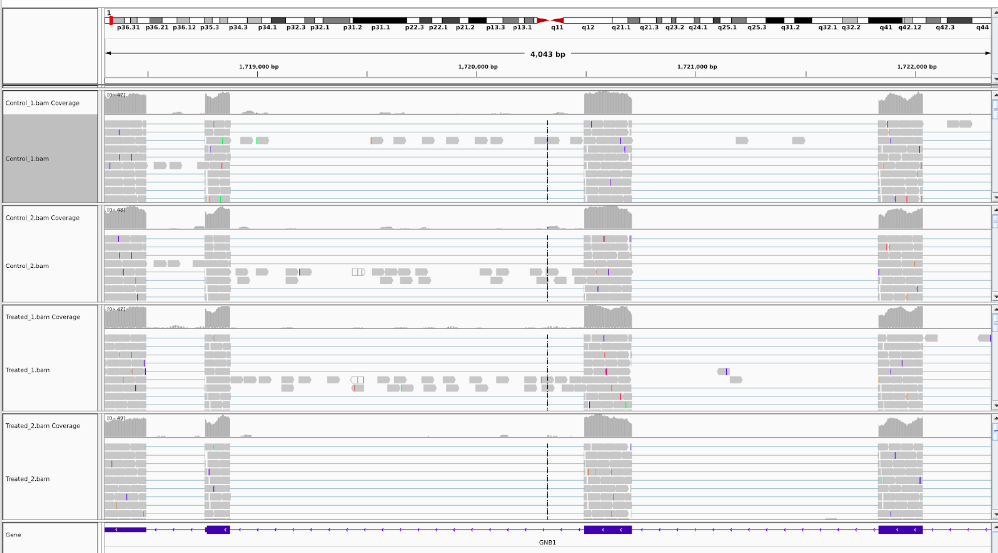

Based on the RNA-Seq workshop by Melbourne Bioinformatics written by Mahtab Mirmomeni, Andrew Lonie, Jessica Chung Original
Modified by David Powell (Monash Bioinformatics Platform)
Further Modified by Mark Dunning of Sheffield Bioinformatics Core
web : sbc.shef.ac.uk
twitter: @SheffBioinfCore
email: bioinformatics-core@sheffield.ac.uk
This tutorial will cover the basics of RNA-seq using Galaxy; a open-source web-based platform for the analysis of biological data. You should gain an appreciation of the tasks involved in a typical RNA-seq analysis and be comfortable with the outputs generated by the Bioinformatician.
The official Galaxy page has many tutorials on using the service, and examples of other types of analysis that can be performed on the platform.
Those eventually wanted to perform their own RNA-seq analysis (for example in R), should look out for other courses
The data for this tutorial is from the paper, A comprehensive comparison of RNA-Seq-based transcriptome analysis from reads to differential gene expression and cross-comparison with microarrays: a case study in Saccharomyces cerevisiae by Nookaew et al. [1] which studies S.cerevisiae strain CEN.PK 113-7D (yeast) under two different metabolic conditions: glucose-excess (batch) or glucose-limited (chemostat).
The RNA-Seq data has been uploaded in NCBI, short read archive (SRA), with accession SRS307298. There are 6 samples in total-- two treatments with three biological replicates each sequenced paired-end. We have selected only the first read, and only two replicates of each condition to keep the data small for this workshop.
We have extracted chromosome I reads from the samples to make the tutorial a suitable length.
For this tutorial, we will assume that the wet-lab stages of the experiment have been performed and we are now in the right-hand branch of the workflow. In this tutorial we will demonstrate the steps of Quality assessment, alignment, quantification and differential expression testing.
Make sure you check your email to activate your account
We can going to import the fastq files for this experiment. This is a standard format for storing raw sequencing reads and their associated quality scores. Each read is described by 4 lines in the file:-

The quality scores are ASCII representations of how confident we are that a particular base has been called correctly. Letters that are further along the alphabet indicate higher confidence. This is important when trying to identify types of genome variation such as single base changes, but is also indicative of the overall quality of the sequencing. Different scales have been employed over time (resulting in a different set of characters appearing in the file). We will need to tell Galaxy which scale has been used in order that we can process the data correctly.

You can import the data by:
Upload the sequence data by pasting the following links into the text input area. These two files are single-end samples from the batch condition (glucose-excess). Make sure the type is specified as 'fastqsanger' when uploading.
These two files are single-end samples from the chem condition (glucose-limited). Make sure the type is specified as 'fastqsanger' when uploading.
Then, upload this file of gene definitions. You do not need to specify the type for this file as Galaxy will auto-detect the file as a GTF file.
You should now have these 5 files in your history:
batch1_chrI_1.fastqbatch2_chrI_1.fastqchem1_chrI_1.fastqchem2_chrI_1.fastqgenes.gtfThese files can be renamed by clicking the pen icon if you wish.
Note: Low quality reads have already been trimmed.
FastQC is a popular tool from Babraham Institute Bioinformatics Group used for quality assessment of sequencing data. Most Bioinformatics pipelines will use FastQC, or similar tools in the first stage of the analysis. The documentation for FastQC will help you to interpret the plots and stats produced by the tool. A traffic light system is used to alert the user's attention to possible issues. However, it is worth bearing in mind that the tool is blind to the particular type of sequencing you are performing (i.e. whole-genome, ChIP-seq, RNA-seq), so some warnings might be expected due to the nature of your experiment.
Look at the generated FastQC metrics. This data looks pretty good - high per-base quality scores (most above 30).

In this section we map the reads in our FASTQ files to a reference genome. As these reads originate from mRNA, we expect some of them will cross exon/intron boundaries when we align them to the reference genome. Tophat is a splice-aware mapper for RNA-seq reads that is based on Bowtie. It uses the mapping results from Bowtie to identify splice junctions between exons. More information on Tophat can be found here.
In the left tool panel menu, under NGS Analysis, select NGS: RNA Analysis > Tophat and set the parameters as follows:
RNA-Seq FASTQ file, forward reads:
(Click on the multiple datasets icon and select all four of the
FASTQ files)
batch1_chrI_1.fastqbatch2_chrI_1.fastqchem1_chrI_1.fastqchem2_chrI_1.fastqUse a built in reference genome or own from your history: Use built-in genome

Note: This may take a few minutes, depending on how busy the server is.
You should have 5 output files for each of the FASTQ input files:
You should have a total of 20 Tophat output files in your history.
Rename the 4 accepted_hits files into a more meaningful name (e.g. 'Tophat on data 1: acceptedhits' to 'batch1-acceptedhits.bam') by using the pen icon next to the file.
bam file formatUnlike most of Bioinfomatics, a single standard file format has emerged for aligned reads. Moreoever, this file format is consistent regardless of whether you have DNA-seq, RNA-seq, ChIP-seq... data.
The bam file is a compressed, binary, version of a sam file.
.sam filebwa.bam file. See later.@ character, followed by tab-delimited lines
The first part of the header lists the names (SN) of the sequences (chromosomes) used in alignment, their length (LN) and a md5sum "digital fingerprint" of the .fasta file used for alignment (M5).
``` @HD VN:1.5 SO:coordinate GO:none @SQ SN:1 LN:249250621 M5:1b22b98cdeb4a9304cb5d48026a85128 @SQ SN:2 LN:243199373 M5:a0d9851da00400dec1098a9255ac712e @SQ SN:3 LN:198022430 M5:fdfd811849cc2fadebc929bb925902e5 @SQ SN:4 LN:191154276 M5:23dccd106897542ad87d2765d28a19a1 ..... .....
```
Next we can define the read groups present in the file which we can use to identify which sequencing library, sequencing centre, Lane, sample name etc.
``` @RG ID:SRR077850 CN:bi LB:Solexa-42057 PL:illumina PU:ILLUMINA SM:NA06984 @RG ID:SRR081675 CN:bi LB:Solexa-42316 PL:illumina PU:ILLUMINA SM:NA06984 @RG ID:SRR080818 CN:bi LB:Solexa-44770 PL:illumina PU:ILLUMINA SM:NA06984 @RG ID:SRR084838 CN:bi LB:Solexa-42316 PL:illumina PU:ILLUMINA SM:NA06984 @RG ID:SRR081730 CN:bi LB:Solexa-42316 PL:illumina PU:ILLUMINA SM:NA06984 ..... .....
```
Finally, we have a section where we can record the processing steps used to derive the file ``` @PG ID:MosaikAligner CL:/share/home/wardag/programs/MOSAIK/bin/MosaikAligner -in /scratch/wardag/NA06984.SRR077850.mapped.illumina.mosaik.CEU.SINGLE.20111114/NA06984.SRR077850.mapped.illumina.mosaik.CEU.SINGLE.20111114.mkb -out .... ....
```
Next is a tab-delimited section that describes the alignment of each sequence in detail.
``` SRR081708.237649 163 1 10003 6 1S67M = 10041 105 GACCCTGACCCTAACCCTGACCCTGACCCTAACCCTGACCCTGACCCTAACCCTGACCCTAACCCTAA S=<====<<>=>==@??;?>@@@=??@@????@??@?>?@@<@>@'@=?=??=<=>?>?=Q ZA:Z:<&;0;0;;308;68M;68><@;0;0;;27;;>MD:Z:5A11A5A11A5A11A13 RG:Z:SRR081708 NM:i:6 OQ:Z:GEGFFFEGGGDGDGGGDGA?DCDD:GGGDGDCFGFDDFFFCCCBEBFDABDD-D:EEEE=D=DDDDC:
```

Column | Official Name | Brief ------ | -------------- | ----------- 1 | QNAME | Sequence ID 2 | FLAG | Sequence quality expressed as a bitwise flag 3 | RNAME | Chromosome 4 | POS | Start Position 5 | MAPQ | Mapping Quality 6 | CIGAR | Describes positions of matches, insertions, deletions w.r.t reference 7 | RNEXT | Ref. name of mate / next read 8 | PNEXT | Postion of mate / next read 9 | TLEN | Observed Template length 10 | SEQ | Sequence 11 | QUAL | Base Qualities
There can also be all manner of optional tags as extra columns introduce by an aligner or downstream analysis tool. A common use is the RG tag which refers back to the read groups in the header.
Unlike the .fastq files, where we had a separate file for forward and reverse reads, the .sam file contains all reads. Reads that are paired with each other should appear in consecutive lines in the .sam file generated by an aligner. Otherwise it is more common for the file to be sorted according to genomic coordinates. The paired reads should share the same sequence ID in the first column (sometimes with a /1 or /2 to indicate which is which).

The "flags" in the sam file can represent useful QC information
The combination of any of these properties is used to derive a numeric value
For instance, a particular read has a flag of 163
There is a set of properties that a read can possess. If a particular property is observed, a corresponding power of 2 is added multiplied by 1. The final value is derived by summing all the powers of 2.
``` ReadHasProperty Binary MultiplyBy isPaired TRUE 1 1 isProperPair TRUE 1 2 isUnmappedQuery FALSE 0 4 hasUnmappedMate FALSE 0 8 isMinusStrand FALSE 0 16 isMateMinusStrand TRUE 1 32 isFirstMateRead FALSE 0 64 isSecondMateRead TRUE 1 128 isSecondaryAlignment FALSE 0 256 isNotPassingQualityControls FALSE 0 512 isDuplicate FALSE 0 1024
Value of flag is given by
1x1 + 1x2 + 0x4 + 0x8 + 0x16 + 1x32 + 0x64 + 1x128 + 0x256 + 0x512 + 0x1024 = 163
```
See also

The CIGAR (Compact Idiosyncratic Gapped Alignment Report) string is a way of encoding the match between a given sequence and the position it has been assigned in the genome. It is comprised by a series of letters and numbers to indicate how many consecutive bases have that mapping.
Code | Description ------------- | ------------- M | alignment match I | insertion D | deletion N | skipped S | soft-clipping H | hard-clipping
e.g.
68M
1S67M
15M87N70M90N16M
Rather than dealing with .sam files, we usually analyse a .bam file.
It useful to understand the BAM/SAM format. Convert one of your BAM files to SAM format, and view the text within Galaxy 1. NGS: SAM Tools> BAM-to-SAM convert BAM to SAM and select one of you BAM files 2. Click on the eye of the resulting file to view the SAM alignments. 3. Look through the alignments, which chromosome are the aligning to? Can you see any indels in the CIGAR string?
Download the bam files you have created in the previous step by clicking the disk icon on the right-hand panel. Make sure to click both the Download dataset and Download index buttons. We will now visualise the alignments using the Integrative Genomics Viewer (IGV).


Whilst tools like R are very powerful and allow you to perform statistical analyses and test hypotheses, there is no substitute for looking at the data. A trained-eye can quite quickly get a sense of the data quality before any computational analyses have been run. Futhermore, as the person requesting the sequencing, you probably know a lot about the biological context of the samples and what to expect.
For more details

1) Sample information panel - Information about samples you have loaded - e.g. Sample ID, Gender, Age, Tumour / Normal
2) Genome Navigation panel
- Jump to a genomic region in Chr:Start-End format
- Jump to a gene symbol of interest
3) Data panel - Your sequencing reads will be displayed here - Or whatever data you have loaded + see information on accepted file formats
4) Attribute panel - Gene locations - Genome sequence (if zoomed-in at appropriate level) - Proteins
Go to File -> Load from file and select the aligned bam files from Tophat. Note that the index files .bai need to be present in the same directory. However, you only need to click on the .bam
.bam file
The view in IGV is not static and we can scroll-along the genome by holding-down the left mouse in the data panel and dragging left and right
IGV allows us to configure many aspects of the data display
Menu:- View -> Alignments
It's worth noting that the display settings may be showing fewer reads than you have (downsampling) in order to conserve memory. Also, some QC-fail or PCR duplicates may be filtered.
We also have some options on how to display the reads themselves, which we can acccess by right-clicking on the bam track
Sorting alignments by:-
The reads themselves can also be coloured according to
Experiment with the various settings by right clicking the read alignment track and toggling the options. Think about which would be best for specific tasks (e.g. quality control, SNP calling, CNV finding). We will re-visit these options later when we come to examine particular variant calls
Additional data tracks are also available on the IGV server. These include useful genome annotation tracks, such as:-
In order to test for differential expression, we need to count up how many times each "feature" is observed is each sample. We can then apply statistical tests to these data

HTSeq-count creates a count matrix using the number of the reads from each bam file that map to the genomic features in the genes.gtf. For each feature (a gene for example) a count matrix shows how many reads were mapped to this feature.
Various rules are used to assign counts to features

Use HTSeq-count to count the number of reads for each feature.
In the left tool panel menu, under NGS Analysis, select
NGS Analysis > htseq-count* and set the parameters as follows:
batch1-accepted_hits.bamRepeat for the remaining bam files
We now have a count matrix, with a count against each corresponding sample. We will use this matrix in later sections to calculate the differentially expressed genes.
[DESeq2](https://bioconductor.org/packages/release/bioc/html/DESeq2.html is an R package, that is used for analysing differential expression of RNA-Seq data and can either use exact statistical methods or generalised linear models.
To use this tool, you will have to use the htseq-count tool to obtain counts from each aligned bam file (Section 4 - alternative tool).
In the Galaxy tool panel, under NGS Analysis, select NGS: RNA Analysis > DESeq2 and set the parameters as follows:
batch1-htseqbatch2-htseqchem1-htseqchem2-htseqDeSeq2 result fileby
clicking on the eye icon.
This file is a list of genes sorted by p-value from using DESeq2 to
perform differential expression analysis.DeSeq2 plots file. This file has some
plots from running DESeq2, including PCA and clustering showing relationships between samplesUnder Basic Tools, click on Filter and Sort > Filter:
DESeq2 results filec7 < 0.05 and (c3 > 1.0 or c3 < -1.0)This will keep the genes that have an adjusted p-value (column 7 in the table) of less
or equal to 0.05 and have a fold change of greater than 1 or less than -1. There should be 22 genes in this file.
Rename this file by clicking on the pencil icon of and change the name
from "Filter on data x" to DESeq2_Significant_DE_Genes
[1] Nookaew I, Papini M, Pornputtpong N, Scalcinati G, Fagerberg L, Uhlén M, Nielsen J: A comprehensive comparison of RNA-Seq-based transcriptome analysis from reads to differential gene expression and cross-comparison with microarrays: a case study in Saccharomyces cerevisiae. Nucleic Acids Res 2012, 40 (20):10084 – 10097. doi:10.1093/nar/gks804. Epub 2012 Sep 10
[2] Guirguis A, Slape C, Failla L, Saw J, Tremblay C, Powell D, Rossello F, Wei A, Strasser A, Curtis D: PUMA promotes apoptosis of hematopoietic progenitors driving leukemic progression in a mouse model of myelodysplasia. Cell Death Differ. 2016 Jun;23(6)